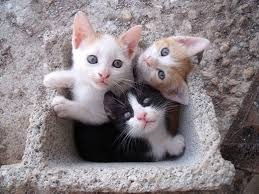
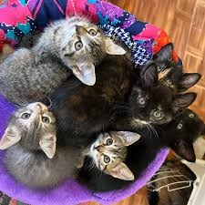

Visión
Visualizamos un país donde cada gatito esté protegido contra el abandono, el maltrato y la indiferencia, viviendo en una sociedad que respeta y valora su vida, mediante la concientización y fomentación de acciones para mejorar.

Visualizamos un país donde cada gatito esté protegido contra el abandono, el maltrato y la indiferencia, viviendo en una sociedad que respeta y valora su vida, mediante la concientización y fomentación de acciones para mejorar.

Nuestra misión es rescatar, rehabilitar y encontrar hogares amorosos para gatitos en situación de abandono, promoviendo siempre la tenencia responsable y el respeto por su bienestar.
Empezamos hace más de 10 años en una pequeña casa al rescatar a dos gatitos, desde ahí ha empezado un camino muy hermoso de aprendizajes y retos, pero sobre todo de satisfacción y alegría al poder ayudar a muchísimos gatitos gracias al apoyo de todas las personas solidarias.